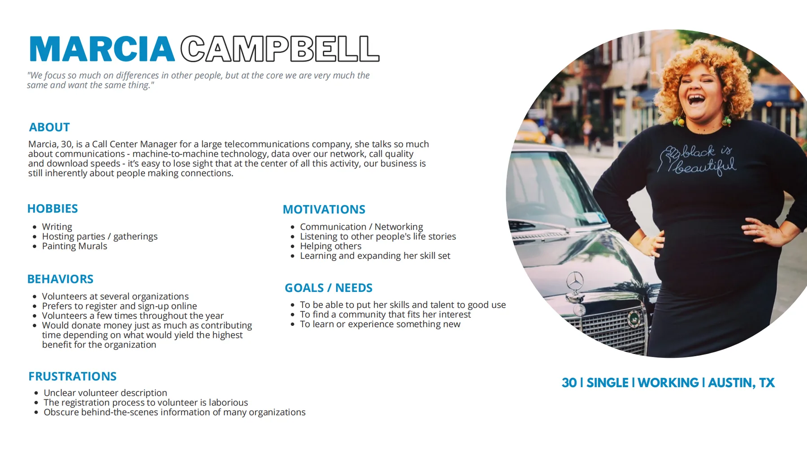
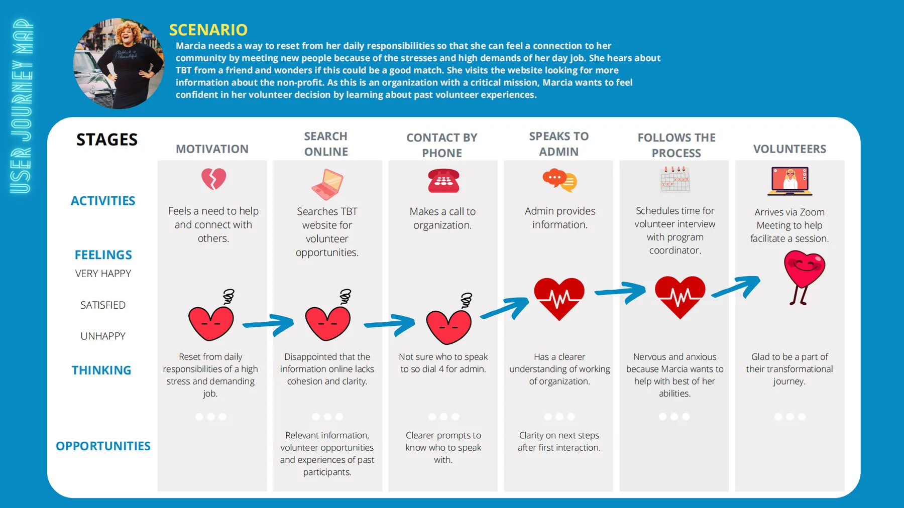
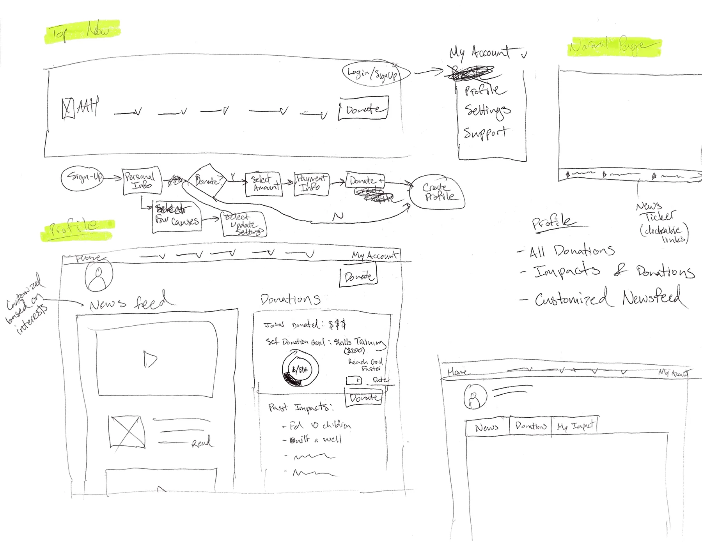

Show the path
A step by step registration with progress indicators, confirmations, and guidance, so nobody wonders whether they did it right.
ux case study · nonprofit client project · team of 5
A nonprofit empowering incarcerated women through storytelling was losing willing volunteers to an unclear signup journey. We rebuilt the path from intent to involvement.
Truth Be Told runs storytelling and community programs inside Texas prisons, and volunteers are how the mission gets delivered. But the digital experience made it hard for a potential volunteer to answer three basic questions: what would I actually do, how do I start, and do I belong here?
Every confused visitor was a missed volunteer, and every missed volunteer was missed impact for the women the program serves.
My role centered on research: mapping the existing onboarding flows, running interviews, synthesizing the pain points, and then collaborating on wireframes and prototypes with the team.
We interviewed and surveyed people who had recently gone through volunteer signup, while the experience was still fresh. Their words did most of the diagnostic work for us.
"The site seemed passionate about the mission, but I couldn't find anything that helped me understand what a real day of volunteering looked like."
"I filled out the form, but then I didn't hear back for a while. That made me second guess whether I had done it right or if I was even needed."
"I wanted to help, but I couldn't tell what the next step was supposed to be."
The research condensed into Marcia Campbell: 30, a call center manager in Austin who volunteers across several organizations and prefers to sign up online. She has the skills, the time, and the heart. What she does not have is patience for a process that leaves her guessing.


How might we help people feel confident joining, build trust through clarity, and make the experience feel emotionally connected?
We sketched against Marcia's friction points, moved to low fidelity wireframes focused on hierarchy and a visible path, then built an interactive prototype around three commitments.
A step by step registration with progress indicators, confirmations, and guidance, so nobody wonders whether they did it right.
Role previews describing a real day of volunteering, so visitors can see themselves in the work before committing.
Real volunteer stories, photos, and testimonials woven through the flow, turning warmth the organization already had into trust online.

We tested the high fidelity prototype with five new volunteers matching our research profiles, and measured the same tasks against the original site and our mid fidelity round.
| Task | Original site | Mid fidelity | Final prototype |
|---|---|---|---|
| Register for a volunteer account | 70% | 70% | 100% |
| Find a role matching their interests | 40% | 70% | 90% |
| Complete the onboarding steps | 50% | 70% | 90% |
| Connect with other volunteers | 30% | 90% | 80% |
The deeper outcome was tonal: the new experience finally sounded like the organization feels in person. Warm, honest, and specific about the work.
For me this project is why research matters in civic design. The volunteers were never unwilling. The interface just never told them they were wanted, and what to do about it.